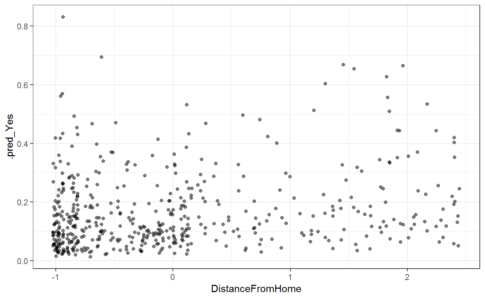

vignettes/bootstrapping.Rmd
bootstrapping.RmdThis vignette walks demonstrates how to estimate uncertainty in predictions via the bootstrap. We use rsample throughout. First we show how to calculate confidence intervals, and then how to calculate predictive intervals. If you are unfamiliar with the difference between these two, we highly recommend that you read vignette("intervals", package = "safepredict").
Throughout this vignette we use the nonparametric bootstrap, which is more robust than the parametric bootstrap and does not require us to assumption that we have a correctly specified model. The parametric bootstrap will give you tighter intervals than the procedures we outline here, but we recommend against this unless you are very, very certain that you have correctly specified your model.
This vignette assumes you are interested in a continuous outcome.
Let \(X\) be the original data (containing both predictors and outcome).
Let’s work through an example, using glmnet for a binary classification problem. Our goal will be to predict Attrition based on 30 predictors variables.
library(dplyr)
library(rsample)
set.seed(27)
attrition <- attrition %>%
sample_n(500)
glimpse(attrition)
#> Observations: 500
#> Variables: 31
#> $ Age <int> 32, 51, 33, 31, 31, 50, 50, 33, 27, 5...
#> $ Attrition <fct> No, No, No, Yes, No, No, No, No, No, ...
#> $ BusinessTravel <fct> Travel_Rarely, Travel_Rarely, Travel_...
#> $ DailyRate <int> 234, 684, 867, 1365, 798, 691, 1115, ...
#> $ Department <fct> Sales, Research_Development, Research...
#> $ DistanceFromHome <int> 1, 6, 8, 13, 7, 2, 1, 3, 1, 3, 4, 24,...
#> $ Education <ord> Master, Bachelor, Master, Master, Col...
#> $ EducationField <fct> Medical, Life_Sciences, Life_Sciences...
#> $ EnvironmentSatisfaction <ord> Medium, Low, Very_High, Medium, High,...
#> $ Gender <fct> Male, Male, Male, Male, Female, Male,...
#> $ HourlyRate <int> 68, 51, 90, 46, 48, 64, 73, 56, 60, 4...
#> $ JobInvolvement <ord> Medium, High, Very_High, High, Medium...
#> $ JobLevel <int> 1, 5, 1, 2, 3, 4, 5, 1, 2, 4, 5, 2, 2...
#> $ JobRole <fct> Sales_Representative, Research_Direct...
#> $ JobSatisfaction <ord> Medium, High, Low, Low, High, High, M...
#> $ MaritalStatus <fct> Married, Single, Married, Divorced, M...
#> $ MonthlyIncome <int> 2269, 19537, 3143, 4233, 8943, 17639,...
#> $ MonthlyRate <int> 18024, 6462, 6076, 11512, 14034, 6881...
#> $ NumCompaniesWorked <int> 0, 7, 6, 2, 1, 5, 3, 1, 5, 3, 2, 2, 1...
#> $ OverTime <fct> No, No, No, No, No, No, Yes, Yes, No,...
#> $ PercentSalaryHike <int> 14, 13, 19, 17, 24, 16, 19, 11, 19, 1...
#> $ PerformanceRating <ord> Excellent, Excellent, Excellent, Exce...
#> $ RelationshipSatisfaction <ord> Medium, High, Medium, High, Low, Very...
#> $ StockOptionLevel <int> 1, 0, 1, 0, 1, 0, 0, 0, 1, 3, 1, 0, 0...
#> $ TotalWorkingYears <int> 3, 23, 14, 9, 10, 30, 28, 8, 6, 21, 2...
#> $ TrainingTimesLastYear <int> 2, 5, 1, 2, 2, 3, 1, 3, 1, 5, 2, 3, 2...
#> $ WorkLifeBalance <ord> Better, Better, Better, Bad, Better, ...
#> $ YearsAtCompany <int> 2, 20, 10, 3, 10, 4, 8, 8, 2, 5, 1, 5...
#> $ YearsInCurrentRole <int> 2, 18, 8, 1, 9, 3, 3, 7, 2, 3, 0, 4, ...
#> $ YearsSinceLastPromotion <int> 2, 15, 7, 1, 8, 0, 0, 3, 2, 1, 0, 1, ...
#> $ YearsWithCurrManager <int> 2, 15, 6, 2, 9, 3, 7, 0, 0, 3, 0, 4, ...Since we’re using glmnet, we have to start with a bunch of preprocessing. The recipes package makes this sane.
library(recipes)
rec <- recipe(Attrition ~ ., data = attrition) %>%
step_center(all_numeric()) %>%
step_scale(all_numeric()) %>%
step_dummy(all_nominal(), -Attrition) %>%
prep()
rec
#> Data Recipe
#>
#> Inputs:
#>
#> role #variables
#> outcome 1
#> predictor 30
#>
#> Training data contained 500 data points and no missing data.
#>
#> Operations:
#>
#> Centering for Age, DailyRate, ... [trained]
#> Scaling for Age, DailyRate, ... [trained]
#> Dummy variables from BusinessTravel, Department, ... [trained]
x <- juice(rec, all_predictors(), composition = "matrix")
y <- juice(rec, all_outcomes())$AttritionWe can now fit an L1 penalized logistic regression model, and use safe_predict() to calculate residuals.
library(glmnet)
library(safepredict)
fit <- cv.glmnet(x, y, family = "binomial")
pred <- safe_predict(fit, x, type = "prob")Let’s take a quick look to sanity check our work. We’ll plot the estimated probability of attrition versus scaled distanced from home.
library(ggplot2)
x %>%
as_tibble() %>%
bind_cols(pred) %>%
ggplot(aes(DistanceFromHome, .pred_Yes)) +
geom_jitter(alpha = 0.5) +
theme_bw()
This passes the sanity check, we proceed to the bootstrapping.
library(purrr)
library(tidyr)
boots <- bootstraps(attrition, times = 10, strata = "Attrition")
fits <- boots %>%
mutate(
prepped = map(splits, prepper, rec),
x_train = map(prepped, ~juice(.x, all_predictors(), composition = "matrix")),
y_train = map(prepped, ~juice(.x, all_outcomes())$Attrition),
model = map2(x_train, y_train, cv.glmnet, family = "binomial")
)Next we get predictions for each bootstrapped fit
boot_preds <- fits %>%
mutate(
preds = map(model, safe_predict, x, type = "prob"),
preds = map(preds, add_id_column)
) %>%
unnest(preds, .id = "model")and all that remains to calculate a 90 percent confidence interval is to look at the quantiles of the bootstrapped fits:
pred_ci <- boot_preds %>%
group_by(.id) %>%
summarize(
.pred_Yes_lower = quantile(.pred_Yes, 0.05),
.pred_Yes_upper = quantile(.pred_Yes, 0.95)
) %>%
bind_cols(pred) %>%
select(-.pred_No)
pred_ci
#> # A tibble: 500 x 4
#> .id .pred_Yes_lower .pred_Yes_upper .pred_Yes
#> <int> <dbl> <dbl> <dbl>
#> 1 1 0.158 0.160 0.160
#> 2 2 0.0260 0.0549 0.0261
#> 3 3 0.0357 0.0609 0.0359
#> 4 4 0.121 0.150 0.149
#> 5 5 0.0585 0.0812 0.0587
#> 6 6 0.0335 0.0858 0.0334
#> 7 7 0.232 0.244 0.242
#> 8 8 0.134 0.179 0.134
#> 9 9 0.170 0.263 0.262
#> 10 10 0.111 0.191 0.111
#> # ... with 490 more rows